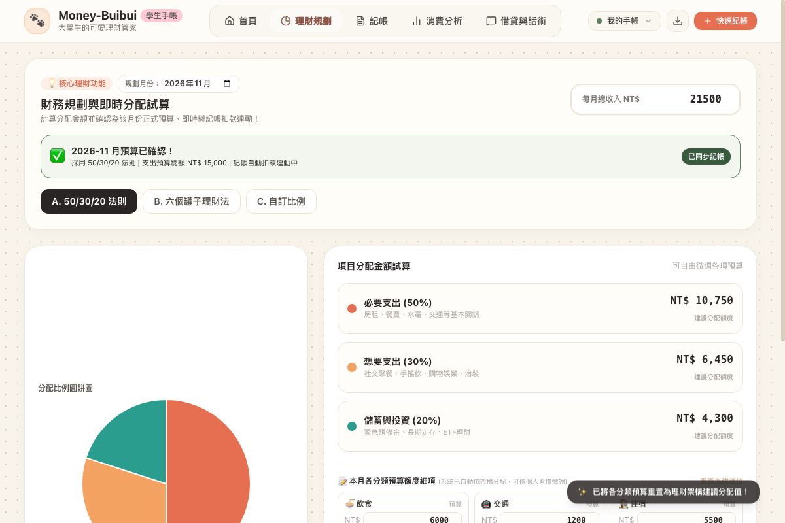

輸入每月生活費（如打工 20,000 元），系統瞬間以整數算出各項金額，圓餅圖視覺化展示（50%生活必需 10,000、30%想要 6,000、20%儲蓄 4,000）。
支援拖拉滑桿自由調整比例，具備防呆 100% 總和校驗。超過或不足 100% 時會溫柔提醒，保證每一筆錢都有清楚的去處。
以前手算常有小數點誤差，我們寫了嚴謹的四捨五入校驗演算法，確保所有分配項目加總 100% 完美等於總收入！